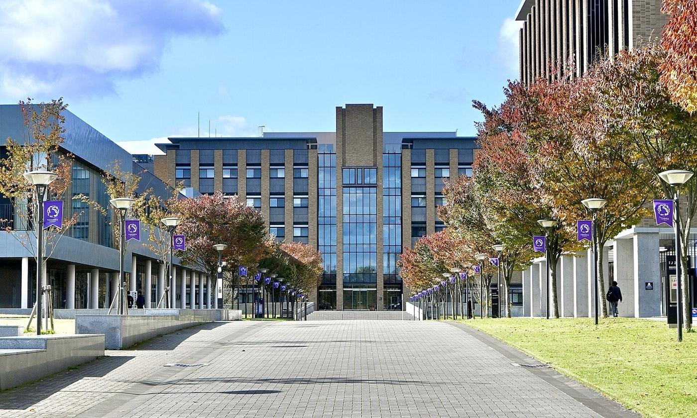

Internship
Tohoku University, Japan
A 12-week research internship in machine learning and AI at the ReaLearn Lab (Racharak Lab), Tohoku University.
← All internship opportunities


- University / institute
- Tohoku University
- Country
- Japan
- Lab
- ReaLearn Lab (Racharak Lab)
- Research area
- ML, AI
- Prior work
- Joint work with Teeradaj Racharak covers:
- Detecting and explaining ChatGPT-generated programs in educational settings (NPC)
- Testing the trustworthiness of LLMs and in-context learning with software testing techniques (PromptOps)
- Natural language explanations for code clone detection using LLMs
- Internship period
- 12 weeks (May – August 2027)
- Positions
- 1
- Eligibility
- 2nd- or 3rd-year students of CP, CEDT, or the master’s program
- CGPA ≥ 3.00
- Strong programming skills
- High responsibility
- Should write or co-write a conference paper after coming back (optional)
- Selection criteria
- The applicant’s background (such as transcript and CV) matches the internship projects.
- Potential to carry on the research work as senior projects.
- Commitment after internship
- Not required
- Scholarship
- N/A
- Accommodation
- N/A
- Contact
- Dr. Chaiyong Ragkhitwetsagul (chaiyong@cp.eng.chula.ac.th)
- Internship topics
- See the topics on the ReaLearn Lab’s Join Us page:
Key dates
- Application period
- Now – December 31, 2026
- Interview
- First two weeks of January 2027
- Result announcement
- Within 1 week after the host interview